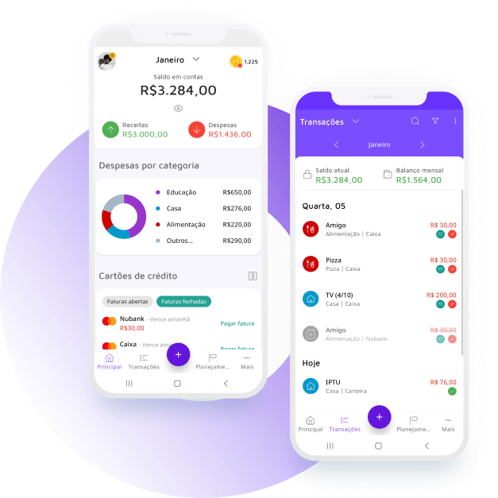

📷 Foto: Eric de Paula
📷 Foto: Eric de Paula
"Sua organização financeira glorifica a Deus."
Eric de PaulaO seu guia prático para aprender finanças do zero, organizar sua vida financeira e ganhar clareza e direção sobre seus objetivos.
📷 Foto: Eric de Paula
"Sua organização financeira glorifica a Deus."
Eric de PaulaEste guia também é um projeto social e educacional.
Parte do valor arrecadado é destinada a cestas básicas e apoio social na cidade de Araxá, Minas Gerais.
O valor deste guia é de R$ 10 — um preço pensado para democratizar de fato esse conhecimento, para que ele chegue a mais gente. Ao adquiri-lo, você já está contribuindo com essas causas. E se quiser contribuir com um valor maior, será muito bem-vindo.
Se você está em uma condição financeira que não permite contribuir agora, e recebeu este guia mesmo assim — seja abençoado. Não se sinta obrigado a contribuir.
 📱 QR Code Pix
📱 QR Code Pix
Este guia não promete enriquecer ninguém da noite pro dia. Ele existe pra resolver um problema bem mais simples e bem mais comum: a maioria das pessoas nunca aprendeu, na prática, como organizar o próprio dinheiro. Não é falta de inteligência — é falta de método.
As próximas páginas trazem um passo a passo direto: primeiro você entende onde está (diagnóstico), depois organiza o que entra e o que sai (orçamento), e a partir daí constrói reserva, sai de dívidas e dá os primeiros passos como investidor. Cada módulo pode ser lido sozinho, mas a ordem foi pensada pra fazer sentido em sequência.
Tenha em mãos seu extrato bancário e da fatura do cartão dos últimos 30 dias — os primeiros módulos pedem que você preencha números reais, não estimativas.
Você não precisa saber tudo sobre finanças. Mas precisa entender aquilo que pode afetar suas escolhas.
Talvez você já tenha pensado:
"Educação financeira não é para mim. Eu mal consigo pagar as contas."
Ou talvez imagine que esse assunto seja apenas para quem investe, acompanha a Bolsa ou tem muito dinheiro guardado.
Mas educação financeira começa muito antes disso.
Ela começa quando você entende quanto dinheiro entra, para onde ele vai e quais decisões precisa tomar para cuidar melhor daquilo que possui.
Não importa se você recebe um salário mínimo, trabalha por conta própria, está aposentado, tem uma empresa ou ainda depende financeiramente de alguém.
Enquanto existir dinheiro passando pelas suas mãos, haverá decisões financeiras sendo tomadas.
Até não decidir já é uma decisão.
Quando você não escolhe para onde o dinheiro vai, as contas, os impulsos e os imprevistos escolhem por você.
Educação financeira é aprender a tomar decisões melhores com o dinheiro.
Isso inclui saber:
Ela não serve apenas para fazer o dinheiro crescer.
Serve também para evitar que ele seja perdido por desorganização, juros, compras por impulso, golpes ou decisões tomadas sem informação.
O básico da educação financeira é entender os conceitos que afetam seu dinheiro. Não tem como analisar dados e fazer um raio-X da sua vida sem entender alguns termos do universo financeiro.
Na próxima página tem um guia resumo e depois o detalhamento com exemplos pra você entender com clareza todos os fundamentos financeiros.
É o valor total antes dos descontos. Imagine que no contrato ou no holerite apareça um salário de R$ 2.500 — esse é o valor bruto.
É o valor que realmente chega à sua conta depois dos descontos. Se, após os descontos, entram R$ 2.180, essa é sua renda líquida.
Por que importa Todo planejamento deve partir da renda líquida — é o único valor que realmente chega às suas mãos pra organizar a vida.
Carlos possui salário bruto de R$ 3.000. Depois dos descontos, recebe R$ 2.620. Ele não deve montar seu orçamento considerando os R$ 3.000, porque esse valor nunca chega por completo às mãos dele. A base do planejamento será R$ 2.620.
Uma pessoa autônoma pode receber valores diferentes a cada mês — R$ 3.000 em um mês, R$ 2.200 no seguinte, R$ 4.000 em outro. Nesse caso, também é importante descontar os custos necessários para trabalhar.
Uma confeiteira vendeu R$ 4.000 no mês. Mas gastou R$ 1.100 com ingredientes, R$ 300 com embalagens e R$ 200 com entregas. O valor vendido não é o mesmo que o dinheiro realmente disponível.
Faturamento é tudo o que entrou com as vendas. Renda ou lucro disponível é o que restou depois dos custos.
É o aumento geral dos preços ao longo do tempo. Em palavras simples: é quando o mesmo dinheiro passa a comprar menos.
Por que importa Ela pode aumentar o custo de tudo — alimentação, aluguel, transporte, remédios — sem avisar. Se sua renda fica parada, seu orçamento aperta mesmo sem você gastar mais.
Em determinado período, R$ 100 compravam arroz, feijão, carne, leite e produtos de limpeza. Depois de algum tempo, os mesmos R$ 100 já não compram a mesma quantidade — os produtos ficaram mais caros e o poder daquele dinheiro diminuiu.
Uma família gastava R$ 600 no mercado. Meses depois, compra praticamente as mesmas coisas e gasta R$ 690. A diferença de R$ 90 precisa sair de algum lugar — reduzindo outros gastos, comprando menos, trocando marcas ou deixando de guardar.
É assim que a inflação chega à vida real.
É a quantidade de produtos e serviços que seu dinheiro consegue comprar. O número na conta pode continuar igual, mas aquilo que esse número compra pode diminuir.
Por que importa Guardar dinheiro parado por muitos anos, sem estratégia, pode fazer com que ele perca poder de compra — mesmo que o valor na conta não mude. É uma das razões pelas quais, depois de organizar a base, estudamos investimentos.
Duas pessoas possuem uma nota de R$ 50. Uma vive em um momento em que o almoço custa R$ 20. A outra vive em um momento em que o mesmo almoço custa R$ 35. As duas têm R$ 50, mas esse dinheiro não possui o mesmo poder de compra.
Você guarda R$ 1.000 em casa durante vários anos. Quando volta a usar esse dinheiro, ainda possui R$ 1.000. Porém, muitos produtos ficaram mais caros. Seu dinheiro não desapareceu, mas perdeu parte do poder de compra.
É o preço pago pelo uso do dinheiro ao longo do tempo. Quem pega emprestado paga pelo tempo; quem empresta ou investe pode receber pelo tempo.
Por que importa Os juros podem trabalhar contra você — rotativo do cartão, cheque especial, atrasos, financiamentos — ou a seu favor, em investimentos e rendimentos. Antes de tentar ganhar juros investindo, muitas vezes vale mais a pena parar de perder dinheiro pagando juros muito altos.
Você pega R$ 1.000 emprestados. Ao final, paga R$ 1.250. Os R$ 250 adicionais representam juros e outros possíveis custos da operação.
Você aplica R$ 1.000. Depois de um período, possui R$ 1.080. Os R$ 80 representam o rendimento antes de possíveis impostos e taxas.
A conta costuma ser feita sempre sobre o valor inicial — o rendimento (ou a dívida) não muda de um período pro outro.
O rendimento ou a dívida pode crescer sobre o valor que já foi acumulado. É o famoso "juros sobre juros".
Por que importa O tempo aumenta o efeito dos juros compostos — eles ajudam quem investe por bastante tempo, reinveste os rendimentos e faz aportes constantes, mas também fazem dívidas atrasadas, fatura de cartão e cheque especial crescerem rápido. Tempo pode ser amigo de quem investe e inimigo de quem mantém dívidas caras.
Você empresta R$ 1.000 com juros simples de R$ 10 por mês. Após três meses: R$ 10 no mês 1, R$ 10 no mês 2 e R$ 10 no mês 3 — total de R$ 30 em juros, sempre calculados sobre os R$ 1.000 iniciais.
Você investe R$ 1.000 e recebe 1% no primeiro período — o valor passa a ser R$ 1.010. No período seguinte, o rendimento não é calculado apenas sobre os R$ 1.000 iniciais, mas sobre os R$ 1.010. Com o tempo, essa diferença pode crescer bastante.
Mostra quanto será cobrado ou pago em relação a um valor. Pode aparecer ao mês, ao ano, por dia, ou durante todo o contrato.
Por que importa Um empréstimo pode informar uma taxa de juros mensal, mas você não deve analisar só a parcela — precisa observar quanto vai pagar no total. Parcela pequena não significa compra barata.
Proposta A: parcela de R$ 220 durante 6 meses — total de R$ 1.320.
Proposta B: parcela de R$ 160 durante 10 meses — total de R$ 1.600.
A segunda parcela parece mais leve. Mas o custo final é maior.
Parcela pequena não significa compra barata. Sempre pergunte:
É a taxa básica de juros da economia brasileira. Funciona como referência para várias outras taxas — não significa que todos os empréstimos e investimentos terão exatamente a mesma taxa, mas ela influencia o caminho dos juros no país.
Por que importa Quando está mais alta, o crédito fica mais caro e alguns investimentos de renda fixa podem render mais; quando está mais baixa, o crédito fica mais barato e o consumo tende a ser estimulado.
A Selic pode influenciar:
Não é necessário acompanhar a Selic todos os dias.
Mas é importante saber que ela influencia tanto o dinheiro que você pega emprestado quanto parte do dinheiro que investe.
É uma forma de crédito normalmente usada para comprar algo específico — imóvel, veículo, equipamento, estudo, energia solar. A instituição paga o bem e você devolve o valor em parcelas, geralmente com juros e outros custos.
Por que importa O custo real vai muito além do valor financiado — parcelas, juros, seguros e tarifas podem fazer você pagar bem mais do que imaginava.
Um carro custa R$ 50.000. A pessoa dá R$ 10.000 de entrada e financia R$ 40.000. Ao final do contrato, pode ter pago muito mais do que os R$ 40.000 financiados.
O que analisar:
O custo não termina na parcela. Um veículo, por exemplo, também pode gerar:
Aprovação de crédito não significa que a parcela seja saudável para sua vida.
O banco avalia se deseja emprestar. Você precisa avaliar se deve aceitar.
É a sigla de Certificado de Depósito Interbancário — uma taxa usada como referência em investimentos de renda fixa. Na prática, o CDI anda muito próximo da Selic: quando ela sobe ou desce, o CDI acompanha de perto, quase colado. Por isso, você vai encontrar expressões como "rende 90% do CDI", "100% do CDI" ou "110% do CDI" — sempre comparando o rendimento a essa referência que se move junto com a taxa básica de juros do país.
Por que importa Um número maior não significa automaticamente um investimento melhor. Uma oferta que rende mais também pode prender seu dinheiro por mais tempo, ter mais risco, cobrar taxas ou não permitir resgate imediato — sempre considere prazo, impostos, taxas e liquidez junto com a rentabilidade.
Imagine que o CDI fosse uma régua. Um investimento que rende 100% do CDI acompanha toda essa régua. Um investimento que rende 90% do CDI acompanha uma parte menor. Um investimento que rende 110% do CDI tenta superar essa referência. Os valores reais mudam ao longo do tempo — o que importa aqui é compreender a comparação.
Um investimento que paga 110% do CDI não significa que você receberá 110% de lucro. Significa que ele rende 110% da taxa usada como referência.
Caso o CDI estivesse em 10% ao ano, apenas como exemplo: 100% do CDI seria próximo de 10% ao ano, 90% do CDI seria próximo de 9% ao ano, e 110% do CDI seria próximo de 11% ao ano.
É uma obrigação financeira que precisa ser paga. Nem toda dívida possui o mesmo peso.
Por que importa Saber diferenciar uma dívida organizada de uma dívida perigosa muda completamente o nível de urgência da solução.
Uma pessoa possui um financiamento planejado e pago em dia. Outra usa o rotativo do cartão todos os meses para comprar alimentos. As duas possuem dívidas, mas enfrentam riscos diferentes.
Para situações previsíveis — impostos, matrícula, material escolar, manutenção, seguros, presentes, viagens.
Para situações inesperadas e necessárias — perda de renda, problema de saúde, reparo essencial, urgência familiar.
Por que importa Reserva não existe pra "sobrar bonita" na conta — existe pra ser usada. Uma despesa que acontece todo ano não é um imprevisto. É uma despesa sem planejamento.
Se um imposto anual custa R$ 1.200, ele não precisa chegar como uma surpresa. A pessoa pode separar R$ 100 por mês durante 12 meses.
É colocar o dinheiro em uma alternativa com a expectativa de proteger seu valor ou obter algum retorno ao longo do tempo. Guardar é separar o dinheiro; investir é escolher onde ele vai ficar e entender como pode render, quando pode ser retirado, quais riscos existem e quais regras precisam ser seguidas.
Por que importa Investir com responsabilidade também não é apostar — envolve conhecimento, objetivo, prazo, análise e diversificação.
Antes de investir, normalmente vale observar:
Não invista em algo que você não consegue explicar com palavras simples.
Se a promessa parece perfeita, urgente ou garantida demais, pare e pesquise.
O dinheiro pode ser retirado com rapidez. Isso é importante para reservas de emergência.
Pode ser necessário esperar uma data, vender um bem, encontrar um comprador, aceitar perda ou pagar alguma penalidade.
Por que importa Uma reserva de emergência precisa estar acessível. Não adianta possuir patrimônio, mas não conseguir pagar uma urgência — ter valor não é a mesma coisa que ter dinheiro disponível.
R$ 5.000 em uma aplicação com resgate rápido possuem mais liquidez do que R$ 5.000 usados para comprar um móvel. O móvel tem valor, mas não pode ser transformado em dinheiro imediatamente com a mesma facilidade.
É a possibilidade de o resultado ser diferente do esperado. Pode significar perder dinheiro, receber menos, não conseguir resgatar quando precisa, a instituição não pagar, o preço oscilar ou a inflação superar o rendimento.
Por que importa Todo investimento tem algum tipo de risco — mesmo alternativas consideradas mais seguras possuem regras e limitações. A pergunta útil não é "tem risco?", e sim "quais são os riscos e eu entendo como eles funcionam?".
Quanto menor o prazo, maior deve ser o cuidado com oscilações e disponibilidade.
É aquilo que o dinheiro gerou durante um período.
É uma maneira de medir esse resultado em relação ao valor investido.
É o número que aparece.
Considera a perda de poder de compra causada pela inflação.
Por que importa O maior retorno nem sempre é a melhor escolha — é preciso analisar junto risco, prazo, liquidez, objetivo, impostos e segurança. E o número que aparece (nominal) nem sempre é o que você realmente ganhou: a inflação pode comer parte do retorno (o real) sem que isso fique óbvio.
Você investiu R$ 1.000. Depois de algum tempo, possui R$ 1.100. O ganho bruto foi de R$ 100 — a rentabilidade bruta foi de 10%. Mas ainda podem existir impostos, taxas, inflação e outros custos.
Seu dinheiro rendeu 8%. Mas os preços aumentaram 6%. Você ganhou poder de compra, mas menos do que os 8% parecem indicar.
É o conjunto do que uma pessoa possui, considerando também aquilo que deve. Pode incluir dinheiro guardado, investimentos, imóvel, veículo, negócio, equipamentos e outros bens — mas as dívidas também precisam entrar na conta.
Por que importa Possuir bens não significa que tudo esteja quitado. Também ajuda a observar se você está construindo, mantendo, reduzindo ou comprometendo o seu patrimônio.
Imagine uma pessoa com R$ 10.000 guardados e um carro de R$ 50.000 — total de bens: R$ 60.000. Mas ela ainda deve R$ 25.000 do carro e R$ 5.000 em empréstimos — total de R$ 30.000 em dívidas. Patrimônio financeiro aproximado: R$ 60.000 − R$ 30.000 = R$ 30.000.
Uma pessoa pode exibir muitos bens e possuir muitas dívidas.
Outra pode viver de forma simples e estar construindo reservas e investimentos.
O que aparece nem sempre mostra a realidade financeira.
Educação financeira não começa quando sobra dinheiro. Começa quando você aprende a dar direção ao dinheiro que já passa pelas suas mãos.
Educação financeira começa com dados.
Muita gente se sente desorganizada não porque é ruim com dinheiro — mas porque não tem clareza sobre os próprios dados. E é impossível gerir qualquer coisa, ter qualquer controle, sobre aquilo que você não consegue ver.
Por isso, o primeiro passo da educação financeira não é cortar gastos, nem investir. É coletar dados.
Parece chato, difícil e trabalhoso. Não é.
O básico da educação financeira:
Imagine que você abra o aplicativo do banco e veja R$ 1.000 na conta.
Esse valor pode gerar uma sensação de alívio.
Mas ainda existem:
As contas pendentes somam R$ 950.
Apesar de o banco mostrar R$ 1.000, apenas R$ 50 ainda não possuem destino.
A conta correta
O primeiro passo é definir quem faz parte desse orçamento.
O raio-X reunirá toda a renda e todas as despesas pessoais.
Para famíliasInclua todas as despesas necessárias para manter a família, mesmo quando são pagas por pessoas diferentes.
É necessário enxergar:
Não é obrigatório juntar tudo numa única conta — mas é importante que os dois conheçam a realidade da casa.
Separe:
Dinheiro da atividade não é automaticamente dinheiro pessoal.
Uma pessoa pode receber R$ 5.000 em vendas e ainda precisar pagar fornecedores, materiais, entregas, impostos e outros custos.
Liste tudo que entra, mês a mês.
Anote quanto entrou nos últimos meses. Não monte sua vida usando como referência o melhor mês — faça uma média. Quem possui renda variável precisa organizar o dinheiro pensando também nos meses baixos.
Algumas despesas são fixas — se repetem todo mês, mesmo que o valor oscile um pouco. Outras são variáveis — aparecem só em meses específicos, como um imposto ou material escolar.
Esse levantamento é geral: serve pra você enxergar o tamanho real das suas despesas mensais e identificar o que é essencial. É a base pra, mais à frente, conseguirmos analisar o que dá pra reduzir.
Liste cada dívida em aberto. Se tiver mais de um cartão ou financiamento, repita a linha.
Com os três levantamentos preenchidos, é hora de transformar isso num retrato simples da sua situação atual. Sem retrato, qualquer decisão é chute.
Volte às fichas que você acabou de preencher e separe em três números simples. Não arredonde pra cima nem pra baixo: quanto mais exato, mais útil o diagnóstico.
Se o "saldo" deu um número negativo, tudo bem — é exatamente pra isso que serve o diagnóstico. O próximo capítulo (Orçamento) parte justamente daqui.
E a dívida, onde entra nessa conta?
A prioridade é sempre pagar os gastos fixos e variáveis do mês — o compromisso que já existe.
Só depois, com o saldo calculado, entra a pergunta sobre patrimônio: existe reserva? Existe dinheiro guardado?
É essa resposta que define a melhor forma de atacar ou negociar as dívidas.
Ter os três levantamentos em mãos não basta — é preciso saber cruzá-los. Três situações aparecem com mais frequência.
Se o que entra (receitas) é menor do que os gastos e dívidas somados, existe um problema real de renda.
Entram R$ 3.000. As despesas essenciais somam R$ 2.100. Mas os outros R$ 900 desaparecem em compras, parcelas e gastos não acompanhados.
Entram R$ 2.200. As despesas essenciais são altas e ainda existem juros, parcelas e gastos por impulso.
Nesse caso, será necessário trabalhar em duas frentes:
Cada momento pede um plano diferente. Qual você identifica que está agora?!
Marcos e Juliana recebem R$ 2.500 por mês cada um.
Os dois possuem a mesma renda.
Mas vivem situações diferentes.
Juliana não está necessariamente "rica".
Mas possui mais direção.
E direção gera decisões melhores.
Duas pessoas podem receber o mesmo valor e ter resultados completamente diferentes.
Não porque uma é melhor do que a outra.
Mas porque uma delas possui um sistema e a outra ainda está tentando resolver tudo de memória.
Consumir não é o problema. Consumir sem perceber é.
O Capítulo 02 te deu os números. Este capítulo é sobre o que está por trás deles.
Toda despesa é uma decisão. O problema é que a maioria delas acontece no piloto automático — sem que você perceba que está decidindo.
Neste capítulo, vamos falar sobre:
Controlar gastos não é sobre gastar menos.
É sobre gastar de acordo com o que você decidiu que importa.
É o hábito de acompanhar, categorizar e decidir sobre o dinheiro continuamente — não é um evento único, é uma rotina.
Por que importa Sem gestão contínua, o raio-X do Capítulo 02 vira uma foto que envelhece rápido. A vida muda todo mês; o acompanhamento precisa acompanhar junto.
Fazer o raio-X financeiro mostra como sua vida está hoje. Mas, para não perder o controle novamente, você precisa acompanhar o dinheiro durante o mês.
Você pode fazer isso em um caderno, em uma planilha ou em um aplicativo. A melhor ferramenta é aquela que você realmente consegue manter.
Eu utilizo e oriento meus alunos a utilizarem um aplicativo financeiro chamado Mobills, que tem versão gratuita e atende muito bem. É mais prático que planilha — está sempre na palma da mão, no celular, e não tem desculpa pra não anotar receita e gasto na hora. É fácil, prático e acessível.

📱 Imagem: app MobillsNo Mobills você consegue reunir informações como:
Inclua os lugares em que você movimenta dinheiro:
Informe:
Isso permite enxergar não apenas a fatura atual, mas também o dinheiro dos próximos meses que já foi comprometido.
Passo 3 — Registre suas receitasInclua somente o dinheiro que realmente entrou:
Limite do cheque especial não é saldo — é crédito, não dinheiro seu. E renda esperada não deve ser registrada como disponível antes de chegar.
Sempre informe:
Você comprou R$ 200 no mercado usando o cartão. Registre: R$ 200 — Alimentação — Mercado — Cartão.
Quando pagar a fatura, não registre novamente os R$ 200 como uma nova despesa. A compra já foi contabilizada — o pagamento da fatura apenas quita o valor que já foi gasto.
Use o raio-X financeiro para definir quanto pode gastar em cada categoria.
Não escolha um valor impossível apenas porque gostaria de gastar menos. Se hoje você gasta R$ 900 no mercado, talvez seja mais realista tentar reduzir para R$ 800 do que criar um limite de R$ 400 e abandonar o planejamento na primeira semana.
O objetivo não é ter um aplicativo impecável.
É ter informações suficientes para tomar decisões melhores.
É uma ferramenta de pagamento com prazo — não é dinheiro extra. Ele antecipa um gasto que já é seu; não aumenta o que você tem.
Por que importa Usar o limite como se fosse renda é a porta de entrada mais comum pro rotativo — um dos juros mais caros do mercado.
Parcelar tudo, mesmo o que cabe no orçamento à vista, é um jeito silencioso de comprometer meses futuros sem perceber.
Cartão não é vilão. Usado com conhecimento, ele pode até ser um aliado — para acumular pontos e milhas, por exemplo. O problema nunca foi o cartão. É saber usá-lo.
E existe uma forma correta de parcelar. Só quem tem educação financeira sabe fazer isso direito. A pergunta certa não é "cabe na parcela?". É: "esse parcelamento vai durar mais tempo do que a própria compra?"
Cremes, produtos de skincare, itens de cabelo — geralmente duram 2, 3 meses de uso. A parcela nunca deveria ir além desse prazo.
Um creme que dura 2 meses deve ser parcelado em no máximo 2 vezes — nunca em 3. Se você parcela além da duração, quando o produto acabar vai precisar comprar outro — e as parcelas começam a se acumular, uma em cima da outra, de coisas que muitas vezes você já nem está mais usando.
O ideal é configurar o vencimento da fatura para o último dia do mês — ou, no máximo, para o primeiro dia do mês seguinte.
Se a fatura vence no meio do mês, o cartão cria um descompasso: o que você gasta agora só é cobrado, de fato, semanas depois — misturado com despesas do mês seguinte. Esse atraso pode virar bola de neve: você vai sempre pagando um pedaço do mês passado junto com o mês atual, sem nunca saber ao certo quanto já está comprometido.
O cartão de crédito é, na prática, um empréstimo — a instituição paga a sua compra na hora, e você devolve depois. Esse prazo não pode se estender além de 30 dias, porque os juros do rotativo são abusivos.
Se o cartão não existisse, você gastaria o dinheiro durante o próprio mês — não teria como comprar hoje e só sentir o impacto dali a 40 dias. O cartão deve funcionar assim também: uma ferramenta de praticidade, não um jeito de esticar o tempo entre gastar e pagar.
Gasta-se no mês, paga-se no mês.
É comprar com intenção — sabendo por quê, e podendo pagar sem comprometer o resto.
É comprar por impulso, comparação ou vazio emocional — sem que a compra resolva, de fato, alguma coisa.
Por que importa O consumismo raramente aparece como um gasto grande de uma vez — aparece em dezenas de pequenas compras que, somadas, pesam mais do que parecem.
Eu precisava disso antes de ver? Eu ainda vou querer isso em uma semana? Estou comprando pra resolver algo, ou pra sentir algo?
Você entra num grupo e paga parcelas; o contemplado (por sorteio ou lance) recebe a carta de crédito. Não há juros, mas há taxa de administração, e o prazo pra ser contemplado é incerto.
Minha opinião: só optaria por consórcio se já tivesse o dinheiro pra dar um lance que contemplasse a carta imediatamente.
Você recebe o valor (ou o bem) imediatamente e paga parcelas com juros. Mais previsível, mas normalmente mais caro no total.
Por que importa Consórcio favorece quem tem prazo flexível e quer fugir dos juros. Financiamento favorece quem precisa do bem agora e consegue pagar a taxa.
Empréstimo bom financia o futuro. Empréstimo ruim cobra do futuro.
Não existe um único caminho certo. Existe o caminho certo pro momento em que você está.
Cada pessoa está em um momento financeiro diferente.
E a educação financeira produz resultados diferentes até pra quem tem a mesma renda.
Lá no Capítulo 02, os dois ganhavam R$ 2.500 — mas um vivia apertado no rotativo do cartão, e a outra já conseguia guardar um pouco todo mês.
A diferença não era quanto ganhavam. Era o sistema que cada um tinha.
Por isso, cada momento financeiro pede um plano diferente:
Quando a renda não cobre o básico e as dívidas têm juros altos, o objetivo não é crescer — é estancar a sangria.
Uma dívida pagando outra — cartão pra pagar cartão — é o sinal mais claro de que a situação está piorando, não melhorando.
Quando as contas já são pagas mas ainda falta previsibilidade, o objetivo é ganhar controle do mês.
Revise o orçamento no mesmo dia todo mês — criar o hábito é mais importante do que acertar o número exato no início.
Quando o mês já fecha no azul, o objetivo é fortalecer a base antes de acelerar.
Reserva não é dinheiro parado — é dinheiro com função. Ela é o que separa um imprevisto de uma crise.
Quando a base já está sólida, o objetivo é fazer o dinheiro trabalhar.
Investir bem começa muito antes de escolher onde investir. Começa em ter, antes, uma base organizada.
Liberdade não é construída de uma única vez. Ela nasce em decisões pequenas.
Durante muito tempo, dinheiro não significou luxo para mim. Significou segurança.
Venho de uma família humilde. Perdi meu pai ainda jovem e acompanhei de perto a luta da minha mãe para suprir as necessidades da nossa casa — o peso das contas, das responsabilidades e das decisões que precisavam ser tomadas mesmo quando o dinheiro era curto.
Essa realidade despertou algo em mim desde muito cedo. Eu queria entender como poderia ganhar mais, cuidar melhor do que recebia e construir uma vida diferente para o meu futuro. Não porque quisesse parecer rico — mas porque queria ter escolhas.
Queria ajudar minha família, conquistar minhas coisas e não passar a vida inteira dependendo da sorte ou esperando que algum problema se resolvesse sozinho.
Aprendi a guardar dinheiro antes mesmo de ter meu primeiro emprego — observando meu pai, enquanto ele ainda era vivo. Todos os dias, ao chegar do trabalho, ele colocava uma moedinha dentro de uma garrafa pet transparente que ficava em cima da estante. Não era muito. Mas era todos os dias.
Depois de um tempo, ele me deu um cofrinho. E eu comecei a imitar aquele gesto — guardar um pouco, sempre.
Foi por isso que, quando consegui meu primeiro emprego como office boy, aos 14 anos, guardar dinheiro foi fácil: o hábito já estava enraizado. O salário era pequeno — não havia grandes valores para administrar —, mas eu já sabia que não poderia gastar tudo o que entrava.
Desde aquela época, comecei a guardar uma parte. Nem sempre era muito: em alguns meses, R$ 50; em outros, um pouco mais. O valor mudava, mas o hábito permanecia. Desde então, nunca mais parei de guardar dinheiro.
Muitas pessoas acreditam que só conseguirão guardar quando receberem um aumento, terminarem uma dívida ou alcançarem uma renda ideal. Mas, quando o hábito depende de uma situação perfeita, ele quase nunca começa.
Guardar R$ 50 pode parecer pouco. Mas o primeiro valor guardado não serve apenas para aumentar seu saldo — ele começa a formar uma nova forma de pensar. Você deixa de usar todo o dinheiro só para o presente e começa a construir alguma coisa para o futuro.
Minha mãe me deu uma bicicleta — com muito esforço da parte dela. Foi com essa bicicleta que comecei a trabalhar.
Minha primeira conquista de verdade, comprada com o meu próprio dinheiro, foi um computador. Fui até a loja e escolhi cada peça: o monitor, o teclado, o mouse. Aquele mouse, aliás, está comigo até hoje — já tem 30 anos e continua funcionando.
 📷 Foto: o computador
📷 Foto: o computador
Em paralelo, usei esse mesmo esforço pra ajudar minha mãe: nossa casa não tinha laje, era direto pro telhado, e eu ajudei a pagar um forro de PVC pra cobrir aquilo.
Anos depois, quando as coisas já tinham melhorado, doei esse computador pra uma família que precisava.
Aos 16 anos, alcancei meus primeiros R$ 10 mil investidos — mesmo já tendo usado parte do que guardava para comprar o computador e ajudar minha mãe com o forro de PVC.
Esse valor não apareceu de uma vez. Não foi resultado de uma aposta, de uma oportunidade milagrosa ou de uma renda extraordinária. O segredo foi, antes de tudo, guardar, guardar, guardar — e, quando o valor começou a crescer, pesquisar sobre investimentos.
Foi aí que descobri os juros compostos e comecei pela renda fixa, com o básico do básico: o Tesouro Direto. Na época havia muito pouca informação disponível — e eu ainda precisava pagar TED no banco só para conseguir mandar o dinheiro pra corretora.
Começa:
Organização financeira não significa apenas reduzir gastos. Em alguns momentos, também precisamos encontrar formas de aumentar nossa capacidade de ganhar dinheiro.
Eu não tinha condições de pagar uma faculdade. Mas aqui em Araxá várias empresas oferecem oportunidades de estudar e ganhar dinheiro ao mesmo tempo — como o Senai e a bolsa do Cefet. Pra mim, naquela época, era a oportunidade certa.
Como sempre tive facilidade com matemática, escolhi a área elétrica, que exigia bastante cálculo e onde eu tinha melhor desempenho. Entrei no Senai, estudei elétrica e já ganhava um dinheirinho enquanto trabalhava meio período — os três períodos do dia ocupados, entre trabalho e estudo.
Depois fiz o Cefet, e isso abriu a oportunidade de entrar numa empresa onde pude crescer ainda mais: meu salário foi aumentando com o tempo.
 📷 Foto: o Escort 1994
📷 Foto: o Escort 1994
Comprei meu primeiro carro em 2020, com 25 anos. Mas eu já poderia ter comprado antes — só que uma coisa é poder comprar, outra é comprar e conseguir manter. Eu sabia que, além do carro, viriam IPVA, manutenção, seguro e gasolina.
Podia ter financiado um mais novo, mas meu foco era prosperar e sair daquela fase o mais rápido possível — então dei passos calculados. Até os 25 anos, andei de transporte público e, principalmente, de bicicleta, pedalando pra cima e pra baixo, até poder ter um carro de forma responsável.
O carro que comprei é muito especial: um Ford Escort 1994, AP 1.8, que já estava na família havia mais de 20 anos. Meu tio foi o primeiro dono, e meu pai, quando criança, andava nele com ele. Ao longo dos anos, meu tio comprou esse carro de volta três vezes, chegou a vender pro próprio filho — e foi dele que eu comprei.
Aos 28 anos, comprei um segundo carro — mais confortável e mais seguro pra viajar. E, por uma decisão financeira, passamos a manter apenas o mais novo: por segurança, logística e a nossa casa.
Em julho de 2026, vendi oficialmente o Escort — pra uma pessoa que já reformou ele totalmente e vai cuidar dele melhor do que eu cuidaria. Não foi uma decisão fácil, mas fez sentido: os sonhos mudam, a gente evolui, amadurece, e assim é a vida.
Evoluir não é esquecer de onde você veio. É saber a hora certa de deixar ir.
Desde muito cedo, percebi que dinheiro e liberdade estavam profundamente ligados. Não porque dinheiro resolva tudo — ele não resolve. Mas a falta de organização financeira pode limitar escolhas importantes: pode obrigar alguém a permanecer numa situação ruim, adiar projetos, impedir uma mudança, transformar qualquer imprevisto em desespero.
Para mim, liberdade significa ter mais possibilidade de escolha:
 📷 Foto: casamento / viagens em casal
📷 Foto: casamento / viagens em casal
Mais tarde, casei-me com uma mulher que também ama a liberdade. Quando duas pessoas começam uma vida juntas, não unem apenas sonhos — também unem hábitos, medos, prioridades, responsabilidades e maneiras diferentes de enxergar o dinheiro.
A educação financeira nos ajudou a transformar essas diferenças em planejamento. Passamos a unir forças, organizar objetivos e tomar decisões pensando na vida que desejávamos construir.
Essa união nos permitiu realizar sonhos que, por muitos anos, pareciam distantes: compramos nossa casa própria e conhecemos mais de dez países. Vivemos experiências que não aconteceram porque o dinheiro simplesmente apareceu — foram possíveis porque existiram organização, prioridades, planejamento, pesquisa, decisões em conjunto e constância.
Ao longo dessa caminhada, também conheci o universo das milhas aéreas. Em palavras simples, milhas são pontos que podem ser usados, entre outras possibilidades, para emitir passagens aéreas — acumulados por meio de gastos planejados no cartão de crédito, programas de fidelidade, compras em empresas parceiras, promoções de transferência e outras estratégias específicas.
Quando utilizadas com conhecimento, as milhas podem ajudar uma pessoa a viajar pagando menos, ou aproveitando melhor os gastos que já faria.
Não faz sentido:
Em nossa história, a educação financeira veio primeiro. As milhas entraram como uma ferramenta complementar — a união entre organização, planejamento de viagens e conhecimento dos programas que ajudou a ampliar nossas possibilidades.
Nós não viajamos simplesmente porque tínhamos milhas. Viajamos porque construímos uma vida em que os sonhos tinham espaço no orçamento — e as milhas ajudavam a tornar alguns caminhos mais acessíveis.
As milhas e a organização financeira me proporcionaram conhecer [inserir países] e outros países.
![[País 1]](./assets/fotos/pais-1.jpg) 📷
📷
![[País 2]](./assets/fotos/pais-2.jpg) 📷
📷
![[País 3]](./assets/fotos/pais-3.jpg) 📷
📷
![[País 4]](./assets/fotos/pais-4.jpg) 📷
📷
![[País 5]](./assets/fotos/pais-5.jpg) 📷
📷
![[País 6]](./assets/fotos/pais-6.jpg) 📷
📷
Gostaria de saber mais?
Entre em contato no WhatsAppQuando penso em tudo o que construí desde aquele primeiro trabalho como office boy, percebo que a maior transformação não está apenas nos bens ou nos valores investidos. Está na forma de pensar.
A educação financeira me ensinou a:
Ela me ajudou a transformar trabalho em conquistas. Conquistas em segurança. Segurança em liberdade. E liberdade em propósito.
Hoje, esse conhecimento também me permite ajudar outras pessoas. Foi por isso que este projeto nasceu — porque acredito que aquilo que transforma a nossa vida pode se tornar uma ponte para transformar a vida de alguém.
Talvez sua realidade hoje seja muito diferente da minha. Talvez você esteja endividado, sua renda não cubra tudo, ou nunca tenha conseguido guardar. Talvez já tenha tentado se organizar e desistido. Tudo bem — você não precisa começar de onde eu estou hoje. Precisa começar de onde você está.
Meu processo não começou com uma casa própria. Começou com um salário pequeno e a decisão de guardar uma parte.
Não começou com viagens internacionais. Começou com uma bicicleta.
Não começou com grandes investimentos. Começou com constância.
O primeiro passo pode ser:
O tamanho do primeiro passo não determina o tamanho do caminho. O que importa é começar com consciência e continuar.
Muitas pessoas deixam de sonhar porque acreditam que seus objetivos são grandes demais para sua realidade. Outras sonham, mas nunca transformam o desejo em plano. A educação financeira cria uma ponte entre esses dois pontos.
Ela pega algo que parece distante e começa a responder:
Talvez seu sonho seja sair das dívidas, ter uma reserva, comprar uma casa, estudar, viajar, abrir um negócio, ajudar sua família, ter mais tempo, construir uma aposentadoria ou contribuir com outras pessoas. O sonho muda de pessoa para pessoa. Mas o processo possui algo em comum:
Não quero que você termine esta leitura acreditando que precisa fazer tudo de uma vez. Também não quero que compare sua vida com a minha.
Quero que perceba que é possível construir uma relação diferente com o dinheiro. Não importa se seu primeiro valor guardado será R$ 10, R$ 50 ou R$ 500. Não importa se você precisará primeiro organizar dívidas, aumentar a renda ou aprender a usar o cartão. Existe um caminho.
Você não controla tudo o que acontecerá. Imprevistos continuarão existindo. Os preços poderão aumentar. A renda poderá mudar. Planos poderão precisar de ajustes.
Mas, quanto mais conhecimento e organização você tiver, maior será sua capacidade de responder à vida sem perder completamente o caminho.
Como cristão, hoje eu tenho uma maturidade que antes eu não tinha: entender que é Deus quem concede o fôlego da vida e a capacidade de trabalhar e conquistar riquezas. Sem a permissão dele, nada do que eu construí seria possível.
Enquanto eu ainda estava longe de Jesus, perdido no mundo, ele já permitia que eu conquistasse algumas coisas. Encontrá-lo, depois, me deu a chance de devolver tudo isso a ele — de mostrar que cada conquista foi, na verdade, honra e glória dele. É ele quem sustenta a nossa família.
Ele é um Deus de organização, um Deus que provém. Mais precioso do que se organizar, juntar dinheiro e realizar sonhos é saber que o Criador é maior que a criação — e que cuidar do seu dinheiro também é uma forma de honrar e glorificar a Deus.
A educação financeira transformou minha vida porque me mostrou que liberdade não é construída de uma única vez. Ela nasce em decisões pequenas — no dinheiro que você deixa de desperdiçar, na parcela que decide não assumir, na dívida que começa a enfrentar, no valor que separa todos os meses, no conhecimento que busca, no sonho que transforma em plano.
Eu comecei jovem, com pouco dinheiro e muitas perguntas. Com o tempo, aquelas pequenas decisões abriram caminhos que eu ainda não conseguia enxergar.
Hoje, ao compartilhar esta história, meu objetivo não é mostrar apenas o que conquistei. É lembrar você de que toda história de transformação possui um começo.
Talvez este guia seja o seu.
Com fé, direção e liberdade,
Eric de Paula
Educador financeiro
 📷 Foto: Eric de Paula
📷 Foto: Eric de Paula
Educador Financeiro · Mentor de Investimentos · Especialista em Milhas Aéreas
ServiçosEste guia também é um projeto social e educacional.
Parte do valor arrecadado é destinada a cestas básicas e apoio social na cidade de Araxá, Minas Gerais.
O valor deste guia é de R$ 10 — um preço pensado para democratizar de fato esse conhecimento, para que ele chegue a mais gente. Ao adquiri-lo, você já está contribuindo com essas causas. E se quiser contribuir com um valor maior, será muito bem-vindo.
Se você está em uma condição financeira que não permite contribuir agora, e recebeu este guia mesmo assim — seja abençoado. Não se sinta obrigado a contribuir.
📱 QR Code Pix
"A riqueza ganha da vaidade diminuirá, mas quem a ajunta pouco a pouco terá aumento."
Provérbios 13:11